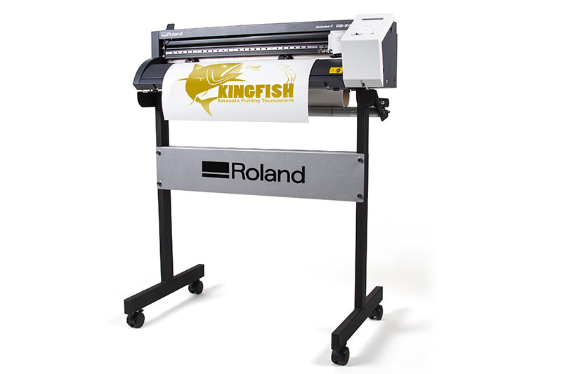
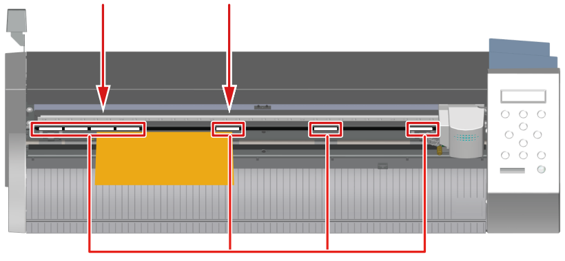
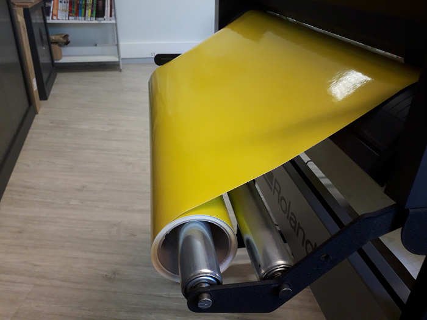
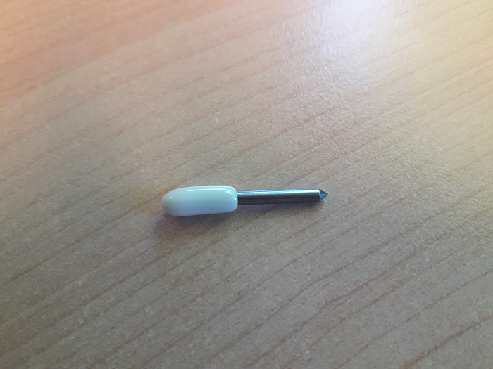
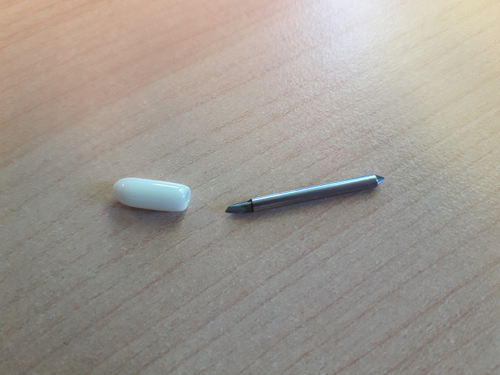
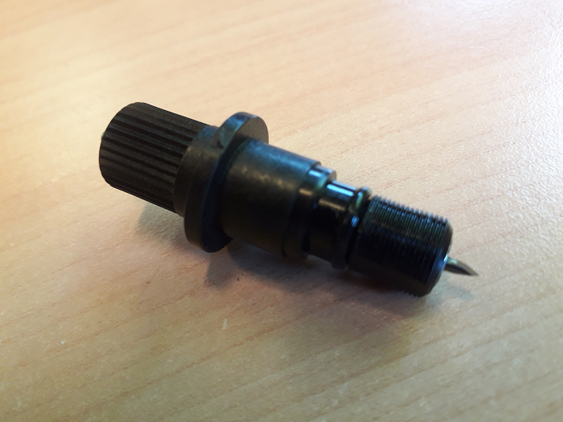
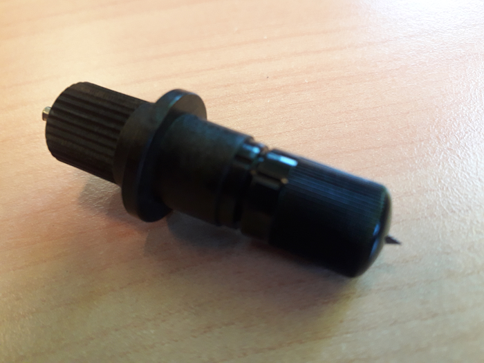
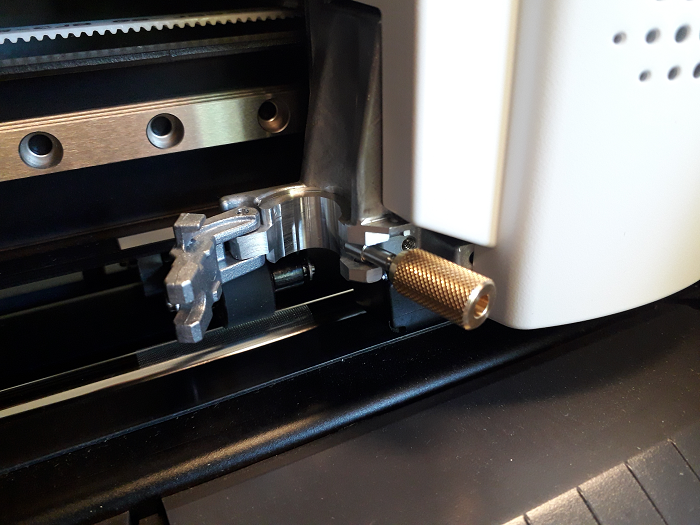
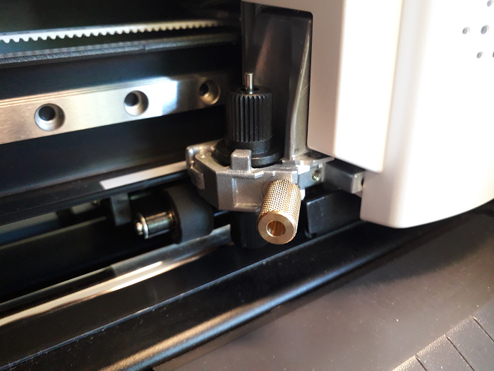

Découpeuse vinyle: Roland CAMM-1 GS-24¶
Tuto: https://youtu.be/qFcAeMAyoUM
Important
TODO voir définition Plotter de découpe.
Matériel¶
Utilisation¶
Important
Ne pas brancher la machine au PC si le driver n’est pas installé, sinon il sera plus possible de l’utiliser.
Note
Pour régler la langue maintenez le bouton menu et pressez le bouton d’allumage.
Roland_CAMM-1_Driver.zip > RDP-014_Roland_CAMM-1_Driver_Windows10_x64_V150.zip > SETUP64.EXE
      